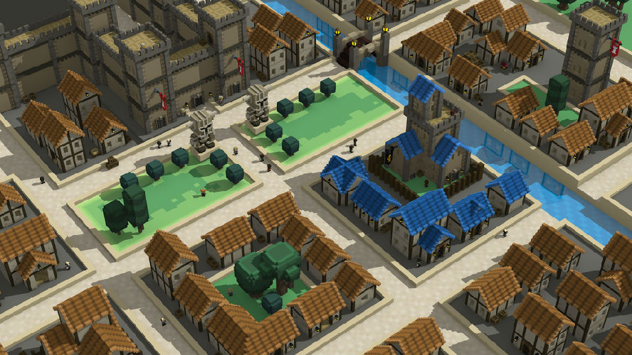
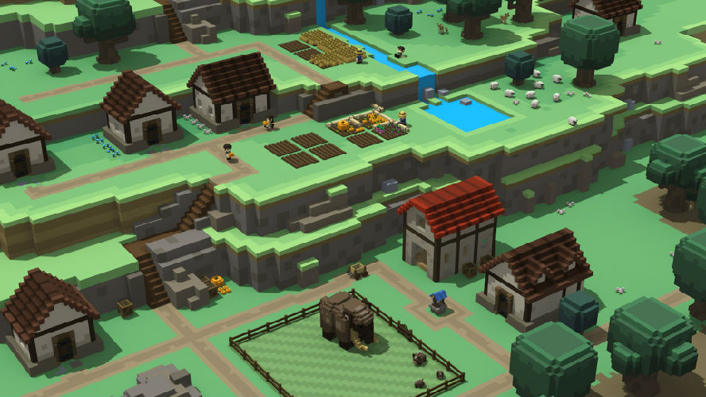
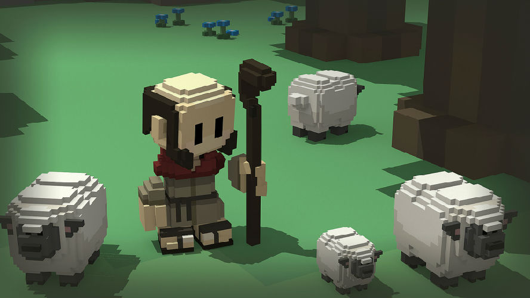
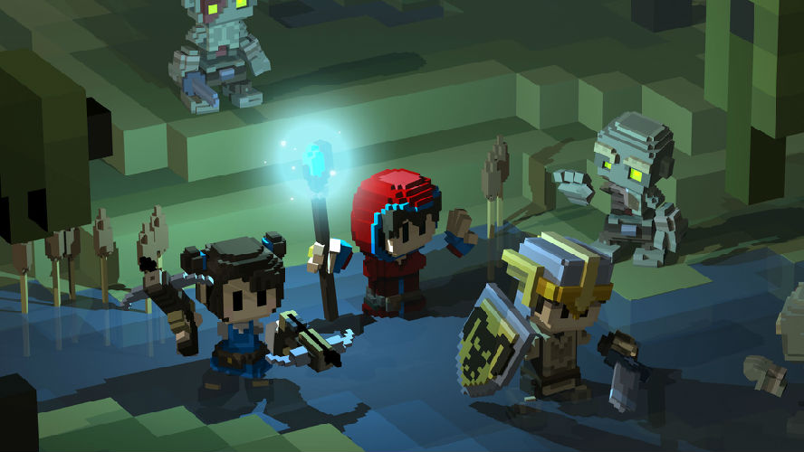
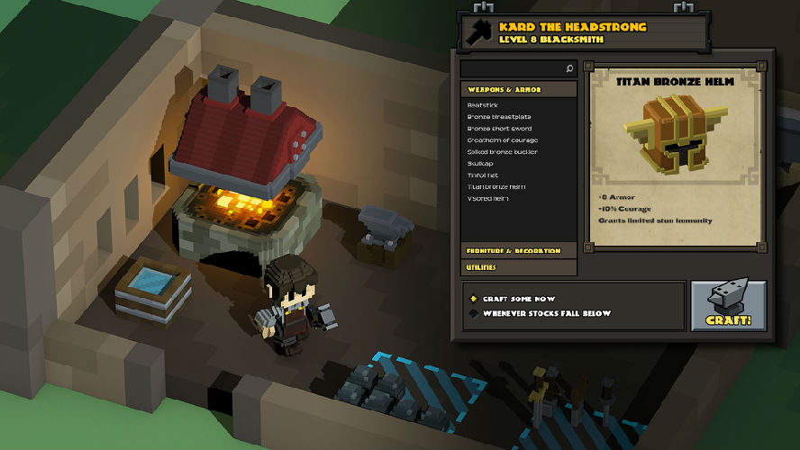
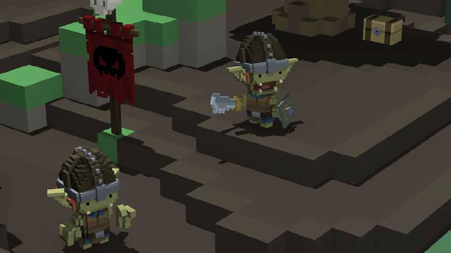
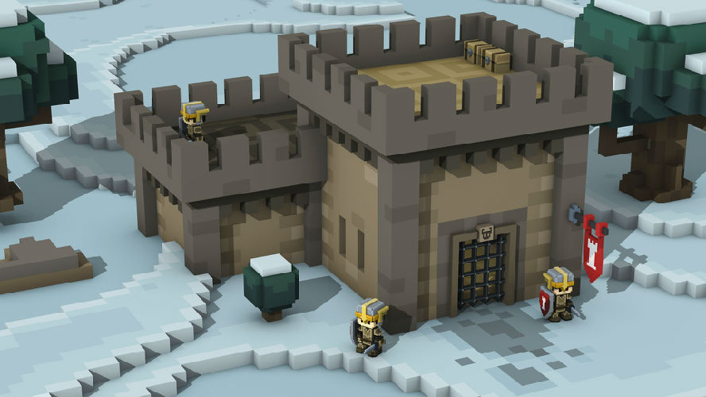

（Stonehearth）《石炉》是一款由Radiant Entertainment制作发行的一款休闲益智类游戏，游戏模式类似《我的世界》的沙盒世界，同样是建造一个聚居地，但是该游戏的侧重点为团体的力量，玩家将要指挥的不是一个人，而是一个团体。玩家需要在游戏中扮演一个先知一般的角色，为自己手下的聚落找到合适的聚集地，指挥他们采集食物，划分存储地，打造工具和建造房屋，最终打造出一个繁华的城镇。
目前游戏版本为alpha版本(比如A10.5-8)
此版本为相对较为稳定的版本,更新于2015.05.17
此处收藏 石炉游戏客户端的全部历史版本
(注意:目前游戏不支持 XP 系统.)
.
此版本为英文最新版本,更新于2015.06.24
汉化进度:已汉化99.9%...请安心享用.
石炉贴吧汉化组成员: @epws喜 @iblackly @lee_振光 @侠客 @三改贰式
完全汉化版!!!.
免安装中文版，解压即玩.不会手动打补丁的朋友请下载!
建立在Coding上的开源石炉汉化项目，你可以加入我们一同汉化它！
注意!!!!所有汉化补丁,请使用与自己游戏版本相同的版本补丁.
汉化补丁包，会打补丁的玩家请下载!